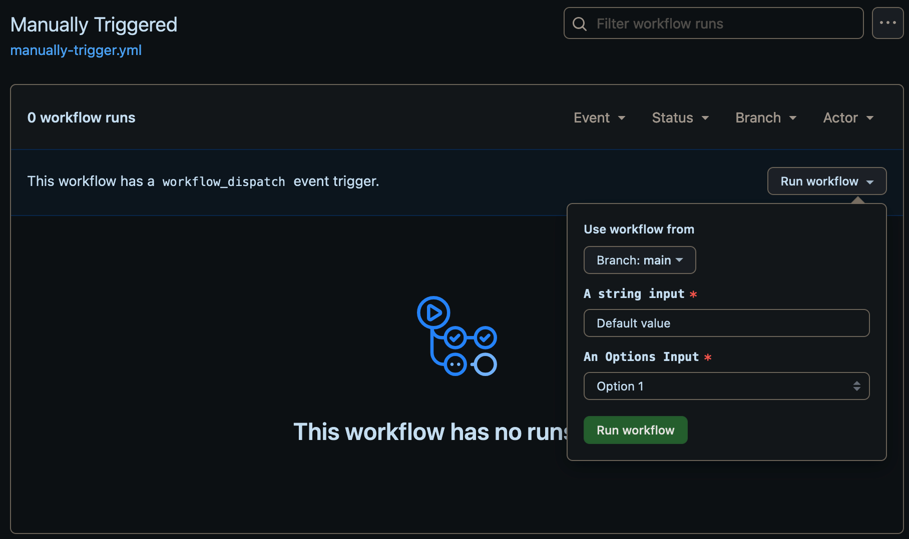
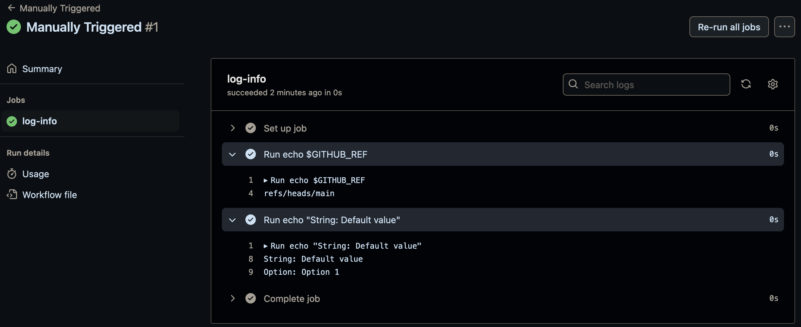
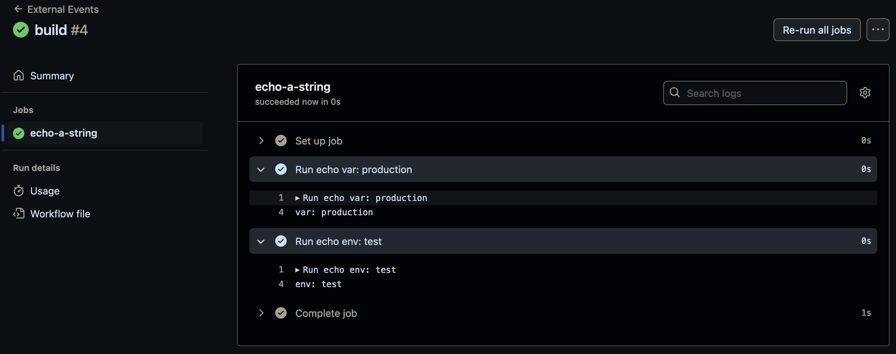

[Github_Actions] Chapter2 Events that Trigger Workflows
Contents
REF
紀錄學習 The Complete GitHub Actions & Workflows Guide
Repository Events
在 GitHub Actions 中可以基於不同 events(例如 push、pull_request、issues 等)來觸發 workflow
可以透過 GITHUB_SHA 和 GITHUB_REF 查看提交的詳細資訊
-
多種事件觸發工作流：
- 不同事件會產生不同的
GITHUB_REF和GITHUB_SHA, 這些 value 取決於觸發事件的類型
- 不同事件會產生不同的
-
push事件：- 當推送到不同分支時,
GITHUB_REF會顯示該分支名稱,GITHUB_SHA則是該分支上的最新提交 - 僅創建新分支或推送至新分支時, 也會自動觸發工作流
- 當推送到不同分支時,
-
pull_request事件：- 開啟 Pull Request 時,
GITHUB_REF會是 GitHub 自動創建的 merge branch, 而非原始的 feature branch - 此 merge branch 用於測試將 Pull Request 與 base branch(一般main) 合併後的結果
- 開啟 Pull Request 時,
-
issues事件：- 當開啟, 關閉或修改 Issue 時, 工作流會觸發,
GITHUB_REF通常是 main branc 或 default branch - 如果未指定 issue type, 則所有與 Issue 有關的活動(例如
opened,edited,deleted)都會觸發工作流
- 當開啟, 關閉或修改 Issue 時, 工作流會觸發,
-
過濾活動類型：
- 可指定具體活動類型來控制工作流觸發, 如僅觸發 Issue opened 事件, 避免不必要的觸發
Events Activity Types
PR & Issue
|
|
預設情況下, 如果沒有指定 types, 則
pull_request 只有 opened, synchronize, or reopened 會 trigger
issue 全部的動作都會 trigger
Workflow Run Approval form Fork Pull Requests
approving-workflow-runs-from-private-forks
approving-workflow-runs-from-public-forks
Fork 的 Pull Request：
- 當 Fork 的分支發起 Pull Request, workflow 預設需要經過 approve 後才會開始運行
- 須到
Settings → Actions → General, 設置是否需要對首次貢獻者或所有外部貢獻者的工作流批准
Fork Pull Request 設置：
- 可選擇針對首次貢獻者或所有外部貢獻者的自動批准選項
- private repo 需要允許 Fork 並設置相應的工作流運行權限
操作步驟：
- 外部貢獻者 Fork 庫後, 發起 Pull Request
- 須到 Actions 標籤下查看待批准的工作流, 檢視更改內容後可選擇
「Approve and run」來運行工作流
Using the Pull Request Target Event
??
Running a Workflow Based and Another Workflow
events-that-trigger-workflows#workflow_run{target="_blank"}
workflow 可以透過另一個 workflow 的執行狀態來 trigger, 有三種 type completed, requested, in_progress
觸發條件可以是：工作流程完成(completed), 請求(requested) 或進行中(in_progress)
使用 workflow_run event 來指定依賴 workflow(可以是一個或多個), 用 , 來分隔
嵌套限制： GitHub Actions 支持最多三层工作流嵌套
Note: You can’t use
workflow_runto chain together more than three levels of workflows. For example, if you attempt to trigger five workflows (namedBtoF) to run sequentially after an initial workflowAhas run (that is:A→B→C→D→E→F), workflowsEandFwill not be run.
假設有兩個 workflow：
Repository Events(例如在程式碼推送時觸發)Workflow Run(在Repository Events完成後觸發)
workflow-run.yaml 配置：
|
|
Filtering Workflow Runs by Branches, Tags and Paths
workflow 可以設定根據 branch, tag, path 在特定情況下才會觸發
Branch filter
控制 workflow 可以在哪些 branch 上運行
syntax：
|
|
這個配置會在 main branch, 所有以 feature/ 開頭的 branch(除了 feature/feat-A)上觸發 workflow
-
可以使用
*進行匹配:- 單星號
*: 匹配任何字符,但不包括/ - 雙星號
**: 匹配任何字符,包括/
- 單星號
-
排除
branch: 使用!
也可以使用 branches-ignore 進行排除, 但是 branches 和 branches-ignore 不能一起使用
請乖乖使用 branches 和 ! 就好不要想東想西
|
|
Tag filter
根據 tag 來控制觸發 workflow
syntax：
|
|
這會在所有 v1.x 版本的 tag 上觸發 workflow 但排除了 v1.1.1
同樣不能同時使用 tags 和 tags-ignore
Path filter
根據更改的文件路徑觸發工作流程
syntax：
|
|
這個配置會在任何 python 文件更改時觸發 workflow, 但排除了 scripts 目錄下的文件
Multiple filter
當使用多個 filter 時, workflow 只在所有條件都滿足時運行
e.g.:
|
|
- 這個 workflow 只會在以下所有條件都滿足時運行：
- 推送到
mainbranch或任何以release/開頭的branch - 更改發生在
src/path下 - 推送的是以
v開頭的tag
- 推送到
PR filter
可以使用 branches 和 paths, 但不適用 tags
e.g.:
|
|
這只會在針對 main branch 的 Pull Request 中有 python 文件被更改時運行
Workflow filter
|
|
這個 workflow 只會在名為 “CI” 的 workflow 在 main branch 上完成運行後執行
Pattern Matching(e.g.)
-
單星號
*: 匹配任何字符，但不包括/例:
feature/*匹配feature/A，但不匹配feature/A/B -
雙星號
**: 匹配任何字符，包括/例:
feature/**匹配feature/A和feature/A/B -
問號
?: 匹配單個字符例:
release-v1.?匹配release-v1.0和release-v1.1
Manually Trigging a Workflow from the Github Web UI, CLI and the REST API
透過 workflow_dispatch 可以讓 workflow 首度觸發, 可以透過 Github Web UI, CLI 和 REST API 等方式
在 workflow_dispatch 下也可以有額外的 input 進行輸入或 variable 控制
基本 syntax：
|
|
- input type:
- string：字符串
- number：數字
- choice：下拉選擇
- boolean：布林值
- environment：環境選擇 (organization)
在 workflow 中讀取 input
- syntax：
${{ inputs.input_name }}
e.g.
manually-trigger.yml
|
|


Trigger Workflow Dispatch 的方法
a) GitHub GUI
-
在 Actions 頁面手動運行
-
選擇 branch 和 input value
b) GitHub CLI
使用之前需要進行 gh auth login, 或其他登入流程
syntax:
gh workflow run <file_name> -F input1=value1 -F option=value2 --ref branch-name
e.g.
gh workflow run manually-trigger.yml -F string="From gh cli" -F option="Option 2" --ref main
c) GitHub REST API
Create a workflow dispatch event
-
發送 POST request
-
endpoint：
/repos/{owner}/{repo}/actions/workflows/{workflow_id}/dispatches
使用 Rest API 方式
-
創建個人訪問令牌（PAT）
-
設置：Profile > Settings > Developer settings > Personal access tokens
-
權限：Actions (Read and write)
-
-
發送 POST 請求
-
包含 Authorization header
-
request body 格式：
-
|
|
Using the Repository Dispatch Event for External Events
Create a repository dispatch event
允許 external events 觸發 GitHub Actions workflow
基本 syntax:
|
|
- 必須部署在 default branch(通常是
main或master)
使用 API
觸發 Repository Dispatch 事件
- 使用 GitHub REST API 發送 POST 請求
- endpoint：
POST /repos/{owner}/{repo}/dispatches - 需要 Personal Access Token, PAT 授權
API 請求詳情
- request header：
Authorization: Bearer <YOUR_PAT>Accept: application/vnd.github.v3+jsonGitHub-Api-Version: 2022-11-28
client_payload 為固定格式
env 可隨意更換名稱, 依據 workflow yaml 設定
- request body：
1 2 3 4 5 6{ "event_type": "build", "client_payload": { "env": "production" } }
事件類型(Event Types)
- 自定義事件類型, 在
event_type中指定, 可以隨意設定, 如果沒有設定, 任意的event_type皆可以 - workflow 可以根據 event type 選擇性執行：
1 2 3on: repository_dispatch: types: [build, test]
客戶端負載(Client Payload)
- 可以在請求中包含額外數據
- 在工作流程中訪問：
${{ github.event.client_payload.key }}
權限要求
- PAT 需要以下權限：
metadata:readcontents:read&write
e.g.
以下用 postman 測試
external-event.yaml
|
|
request body
|
|

Running Workflows on a Schedule
測試工具:
可以透過 schedule 達到固定時間自動執行的效果
使用"schedule"關鍵字來設置定期執行:
基本 syntax:
|
|
0 14 * * *: 每天UTC時間14:00執行
0/5 * * * *: 每5分鐘執行一次
GitHub Actions 的 schedule 最小間隔是5分鐘
Author PawPaw
LastMod 2024-09-11